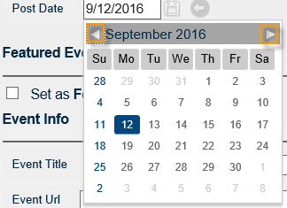

This topic guides you in using the interactive icons next to many fields in the application, including:
You can keyword-search any field with the Search icon.
Fields with a Lookup icon enable you to select from a list of options.
Some fields provide an option to select multiples.
To select all, click the check box at the top of the list.
After you make your selections, click Apply to close the dialog box. “Multiple Selected” appears in the field after you make your selections and close the list. If you select all values on the list, then the field is populated with the phrase “All.”
For any date field in EMS Master Calendar, you can manually enter the date, or you can click the Calendar Tool from which you can select a date for the field. By default, the Calendar Tool shows the current day’s date when it opens. You can use the scroll features on the tool to select dates within the current calendar year, or for previous or future years. If you manually enter a date in a date field, you can enter the date in any month/day/year format—mm/dd/yyyy, m/d/yy, and so on. The application always displays the date based on the language that is specified for your web browser and you cannot modify this.

Calendar Tool
Use the forward and back buttons to scroll through the months for a given year. Select a different month for a given year. Select a different year for a given month.
If you can specify a color for a selected item in Master Calendar, for example, an event label, then a Color Picker icon appears next to the item. You can manually enter an RGB or HEX value for the color in the field, or you can click the Color Picker icon to open the Color Picker dialog box and select an RGB color or a Named Color, or on the Color slider tab, define a custom color. After you use the Color Picker dialog box to select a color, the dialog box closes automatically and the Font Color field is populated with the RGB or HEX value for the selected color.
Color Picker Dialog Box
For any time field in EMS Master Calendar, you can click the Time Picker icon to open a list from which you can select a time for the field. The list shows half hour time increments for a 24-hour period.
Time Picker List